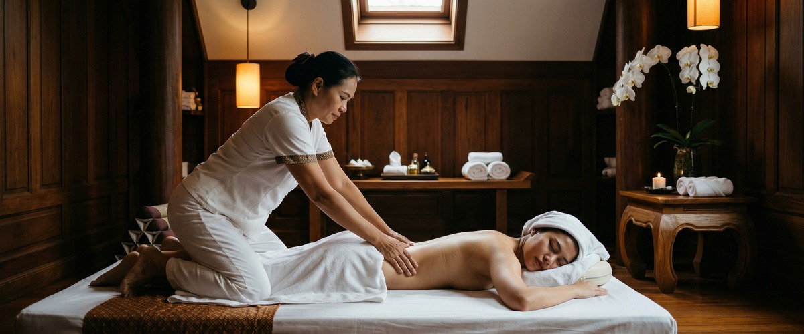
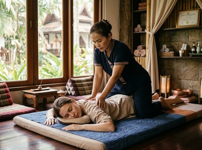
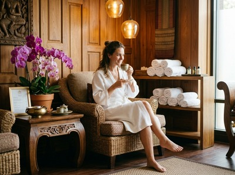

Jasmine Thai Massage on Brunswick Street is a well-established name in Glasgow's city centre massage scene.

The treatment range is broad. It covers Thai massage, sports massage, aromatherapy, Swedish massage, couples massage, and foot reflexology. If you found Jasmine through a search and you're still comparing options, you're likely asking a few practical questions. Is pricing on the website? Who are the therapists and what are their credentials? Can you book online without making a phone call?
Those are fair things to want to know before booking. Jasmine's website does not show pricing or therapist credentials, and booking details are limited. If that's what prompted your search, Serendipity Massage Therapy & Wellness is worth a look.

Serendipity Massage Therapy & Wellness is a professional team practice on Hope Street in Glasgow city centre. Treatments are built around techniques developed by head therapist Jariya Malone, drawing from traditional Thai massage and adapted to deliver consistent results across the full team.
This is not a sole trader or a chain with rotating staff. Every session is delivered to the same trained standard, by therapists who have learned directly from Jariya.
Serendipity offers a full treatment menu including Traditional Thai Massage, Thai Oil Massage, Swedish Massage, Hot Stone Massage, and Thai Aromatherapy Massage. Pricing is clear and online booking is open around the clock. No phone call needed. Book your session at serendipitymassage.co.uk/book-now.
Jasmine Thai Massage does not show pricing on its website. Serendipity lists all prices clearly before you book, so there are no surprises.
Jasmine's website also does not include therapist credentials or background details. Serendipity's treatments are built on techniques developed and taught by head therapist Jariya Malone, giving clients a clear picture of the standard they can expect.
Jasmine is on Brunswick Street in the Merchant City, which makes it a practical option for anyone based in that part of Glasgow's east centre. If you live or work closer to the financial district, St Vincent Street, or Buchanan Street, Serendipity on Hope Street is the more convenient choice. Both businesses serve the city centre, but from different ends of it.
Serendipity suits people who want to know what they're paying before they arrive, and who prefer to book online at a time that suits them. It's also a strong fit for anyone who wants confidence that their therapist has been trained to a clear professional standard.
It's a natural choice for office workers on Hope Street, St Vincent Street, West George Street, and Blythswood Square. It's also well placed for anyone commuting through Buchanan Street or Charing Cross who wants a session before or after work.
From Jasmine Thai Massage on Brunswick Street, the walk to Serendipity on Hope Street takes around 15 to 18 minutes. Head west along Ingram Street and continue through George Square, then follow West George Street or St Vincent Street uphill towards the financial district.
Turn left onto Hope Street and look for Central Chambers at number 93. Serendipity is on the first floor, Suite 50. If you prefer the subway, St Enoch station is a short walk from Brunswick Street and drops you within five minutes of Hope Street.
Get driving directions to Serendipity Massage Therapy & Wellness:

Serendipity Massage Therapy & Wellness — Floor 1, Suite 50, Central Chambers, 93 Hope Street, Glasgow G2 6LD
Book your session today at serendipitymassage.co.uk/book-now.
Yes. Serendipity Massage Therapy & Wellness has online booking open at any time through serendipitymassage.co.uk/book-now. No phone call is needed. You can choose your treatment, pick a time, and confirm your appointment entirely online.
Serendipity's treatments are built on techniques developed by head therapist Jariya Malone and taught to every therapist in the team. That means every session is delivered to the same trained standard. Jasmine Thai Massage's website does not show therapist credentials or background details.
Serendipity Massage Therapy & Wellness is at Floor 1, Suite 50, Central Chambers, 93 Hope Street, Glasgow G2 6LD. This puts it in Glasgow's financial district, close to Buchanan Street and St Enoch subway stations and within easy walking distance of many city centre offices.
Serendipity offers Traditional Thai Massage, Thai Oil Massage, Thai Aromatherapy Massage, Thai Head Massage, Thai Facial Massage, Thai Foot Massage, Hot Stone Massage, Swedish Massage, and Sports Massage, among others. Full treatment details are on the website at serendipitymassage.co.uk.
Yes. Serendipity lists all prices on its website so you know the cost before you confirm. Jasmine Thai Massage does not show pricing online, so you would need to contact them directly to get that information.
From Brunswick Street in the Merchant City, Serendipity on Hope Street is around 15 to 18 minutes on foot. Head west through George Square, then along West George Street or St Vincent Street. Alternatively, St Enoch subway station is a short walk from Brunswick Street, and from there Hope Street is five minutes on foot.
Book your appointment online at serendipitymassage.co.uk/book-now and find out why so many Glasgow clients trust Serendipity for their regular massage sessions.